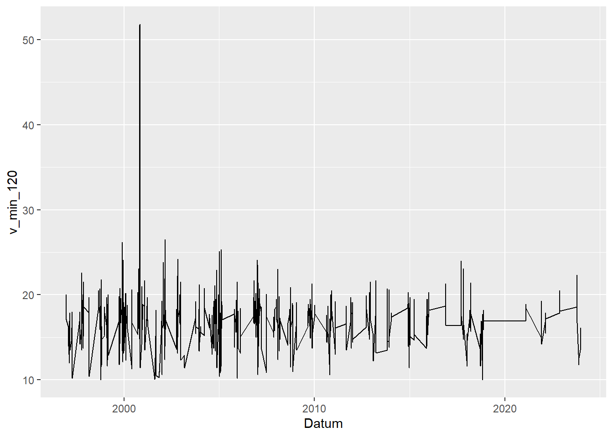

Eine ’‘’Zeitreihe’’’ ist eine zeitlich geordnete Folge von Beobachtungen, bei der sich die Anordnung der Merkmalsausprägungen zwingend aus dem Zeitablauf ergibt (etwa Aktienkurse, Bevölkerungsentwicklung, Wetterdaten).
Die einzelnen Zeitpunkte werden zu einer Menge von Beobachtungszeitpunkten \(T\) zusammengefasst, bei der für jeden Zeitpunkt \(t \in T\) genau eine Beobachtung vorliegt. Zeitreihen treten in allen Bereichen der Wissenschaft auf.
Das R-Paket tsibble stellt eine Datenstruktur (das tsibble - wie tibble aus dem tidyverserse wobei ts für Time Series steht) sowie verschiedene Funktionen bereit, die das Arbeiten mit Zeitreihen vereinfachen.
\(\rightarrow\) Es gibt alle 10 Minuten eine Beobachtung, 20387 neue Zeilen, Werte mit NA gekennzeichnet. Damit: Einfacheres Arbeiten!
27.7 Plot
ggplot(d_wind) +geom_line(mapping =aes(x = Datum, y = Geschwindigkeit))
\(\rightarrow\) Lücken werden als Lücken dargestellt
27.8 Starkwindereignisse
Ereignis: Windgeschwindigkeit innerhalb von 2 Stunden nicht unter 10 m/s und mindestens einmal über 20 m/s (zu Demonstrationszwecken gewählt, kein Kriterium des DWD)
d_wind_stark <- d_wind |>mutate(v_min_120 =roll_minr(Geschwindigkeit, n =12, na.rm =TRUE),v_max_120 =roll_maxr(Geschwindigkeit, n =12, na.rm =TRUE) ) |>filter(v_min_120 >=10, v_max_120 >=20)d_wind_stark
# A tsibble: 10,512 x 5 [10m] <GMT>
# Key: Station [1]
Station Datum Geschwindigkeit v_min_120 v_max_120
<int> <dttm> <dbl> <dbl> <dbl>
1 2115 1996-12-19 22:00:00 20.5 18.5 20.5
2 2115 1996-12-19 22:10:00 20.2 18.5 20.5
3 2115 1996-12-19 22:20:00 19.5 18.5 20.5
4 2115 1996-12-19 22:30:00 20.2 18.5 20.5
5 2115 1996-12-19 22:40:00 20 18.5 20.5
6 2115 1996-12-19 22:50:00 NA 18.8 20.5
7 2115 1996-12-19 23:00:00 NA 18.9 20.5
8 2115 1996-12-19 23:10:00 20.9 19.3 20.9
9 2115 1996-12-19 23:20:00 NA 19.5 20.9
10 2115 1996-12-19 23:30:00 NA 19.5 20.9
# ℹ 10,502 more rows
\(\rightarrow\) Funktionen roll_minr und roll_maxr suchen aus n = 12 Werten (aktuell und 11 vorangegangene) kleinsten und größten Wert heraus. Analog für Summe, Mittelwert und so weiter.
27.9 Plot
ggplot(data = d_wind_stark) +geom_line(mapping =aes(x = Datum, y = v_min_120))

\(\rightarrow\) Einzelne Ereignisse sind nicht zu unterscheiden!